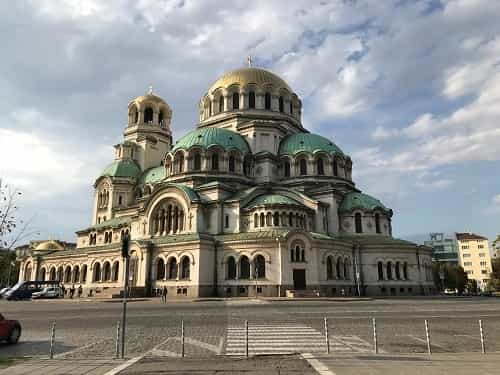

Kyle is an entrepreneur and nomad who has been living abroad since 2016. He blogs at This Is Trouble. Follow him on Facebook.


I recently spent a week in Sofia, Bulgaria. I was quite impressed by the friendliness of the people, the modernity of (some) areas, and the general vibe of the place.
As more and more British stag parties continue to gut former great Eastern European destinations, I feel almost hesitant to share information about Sofia. At the same time, Ryanair is already flying there ($20 from London), so how worse could I possibly make it?
Normies are flocking to places like Budapest and Krakow instead of Sofia and Belgrade. The masses have yet to penetrate these Balkan capitals on a truly high level. With that being said, here are some thoughts I have about Sofia, Bulgaria after a week there.

One thing that impressed me the most about Sofia was the internet speed. My AirBnB, every cafe, and anywhere I went had consistently good internet that was more than sufficient for your average worker.
One day, I ventured out to a co-working space that an American friend had been using, and was thoroughly blown away by how nice it was. While it was a typical Soviet-style building on the outside, inside was a beautiful facility that any entrepreneur would be happy to call home a few days a week. The view was from the top-story even had a nice view of the mountain…
In addition to those perks, the food is good. There are plenty of trendy cafes and restaurants that will be familiar to expats, as well as some good traditional Bulgarian cuisine. Personally, I prefer Balkan cuisine of Bulgaria, Serbia, and Croatia to the much more bland Slavic taste of Poland, Czech, and Ukraine.
Apart from the internet and food, Sofia is nice and becoming a bit more modern. The main walking area, Vitosha Boulevard, is beautiful, clean, and has a great vibe. Once you get out of that main area, it becomes a bit more “grungy”, you could say.
The most apt comparison I’ve found would be to take the Ruin Pub District/Jewish Quarter of Budapest and apply it to the majority of Sofia. If you like the vibe of that section of Budapest nightlife, you’ll like Sofia (though the parties aren’t as good).
The metro is very nice and modern in some sections, and much older and run down in others. If you’re a foreigner, you’ll have very little reason to ever leave the main area of Vitosha.

One of the districts lacking modern infrastructure.
Much like I found Serbians to be (although my time there was brief), Bulgarians were very friendly people. Even in the center of Sofia, people were still “excited” to be able to speak some English, would ask where I was from, etc. Undoubtedly this will not continue forever—girls in Poland were thrilled to speak English not too long ago.
Overall though, everybody had a very friendly vibe and was more than willing to share their city and culture with a foreigner.
Again, your mileage is going to vary greatly depending on how open and friendly you are, as well. Those same stag parties I mentioned before will be looked upon with disdain, and will generally ruin the impression of English-speaking tourists.
I did hear a fair amount of American English while on the streets walking around. However, I consistently noticed something—these people were all very well-behaved, quiet, and respectful. You could just tell by the tone of their voices and the vibe they gave off.
Bulgaria is not a place that your Average Joe or Brittany is going to have on their vacation bucket list. Instead, people who choose to come to Bulgaria typically have a genuine interest in the country and culture—and it shows.
Heels not as common as in Ukraine, but still seen fairly regularly during nice weather.
Ah, yes—the part everybody is really curious about.
Bulgarian girls are definitely cute. I would say a step below their Serbian neighbors to the north, or their even more northern counterparts in Ukraine. Of course, a step below is really not that big of a drop-off. You see plenty of beautiful girls walking around.
The problem is that Sofia is small, and there is not going to be that many of them. If we consider that game is truly down to the numbers, you’re going to have your work cut out for you based on the fact that Sofia is simply a small place.
There is only one small walking area that would be consistently worth it for day game, nightlife that is quiet most days of the week, and there is a generally small population that would make technology-based dating difficult.
In addition, the winters are quite cold, and supposedly during the summer the capital empties out while people head to the beach (which I do hear good things about). Factor all of these things together, and I’m just not sure how highly I could recommend Sofia just for girls
Whereas for Ukraine, I’d say you could pick cities just for the girls alone (and suck it up if you didn’t enjoy the city itself), I couldn’t say that about Sofia. I’d say you’d be far better off picking it as a place to spend a month because you enjoy the city, culture and vibe. The dating scene is a nice bonus.
To hear more about Bulgaria and other EE countries, check out the Dating Abroad Podcast. If you want daily updates from around the globe, go here.
Read Next: 3 Things I’ve Learned From Dating A Ukrainian Girl For One Year